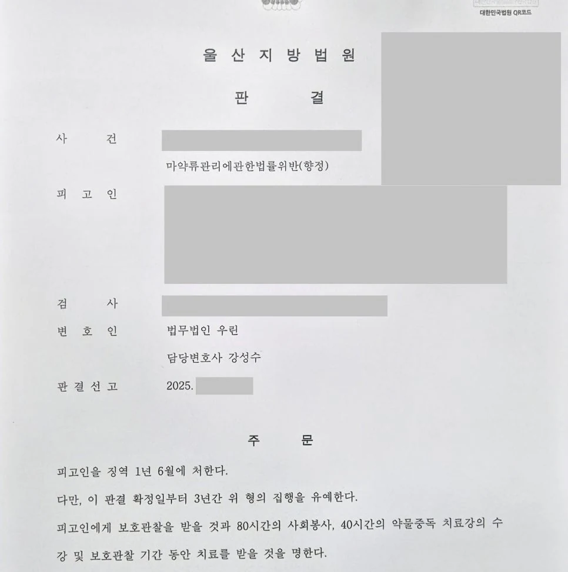

핵심 결과
마약 사건에서 재판 중 다시 마약을 한 경우는 매우 위험합니다.
재판부는 반성 부족과 재범 위험성을 강하게 의심할 수 있습니다.
이번 사건은 이미 마약 투약 혐의로 재판을 받던 중 다시 마약을 사용해 구속된 사안이었습니다.
실형 가능성이 매우 높았습니다.
하지만 법무법인 우린은 사건을 단순한 반복 범행으로만 보이게 두지 않았습니다.
사건 병합, 치료 의지, 재범 방지 계획을 정리해 징역 1년 6월, 집행유예 3년을 이끌어냈습니다.
| 구분 | 내용 |
|---|---|
| 사건 분야 | 마약류관리법 위반 |
| 초기 상황 | 마약 재판 중 다시 마약 사용 |
| 신병 상태 | 구속 상태 |
| 가장 큰 위험 | 재판 중 재범으로 인한 실형 가능성 |
| 주요 대응 | 사건 병합, 치료 자료, 단약 계획, 재범 방지 자료 제출 |
| 최종 결과 | 징역 1년 6월, 집행유예 3년 |
사건 개요
의뢰인은 이미 마약 투약 혐의로 재판을 받고 있었습니다.
그런데 재판이 진행되는 중 다시 마약을 사용했습니다.
결국 현장에서 구속되었습니다.
마약 사건에서 재판 중 재범은 매우 불리합니다.
재판부 입장에서는 “법의 심판을 받는 중에도 다시 범행했다”고 볼 수 있습니다.
따라서 실형 가능성이 매우 큰 사건이었습니다.
실형 가능성이 컸던 이유
- 이미 마약 투약 혐의로 재판 중이었습니다.
- 재판 중 다시 마약을 사용했습니다.
- 의뢰인은 구속된 상태였습니다.
- 마약 사건은 재범 위험성을 매우 중요하게 봅니다.
- 단순한 반성문만으로는 설득이 어려웠습니다.
이 사건은 처음부터 집행유예를 장담하기 어려운 구조였습니다.
마약 재범 사건에서 재판부가 보는 것
마약 사건은 “다시는 안 하겠습니다”라는 말만으로 부족합니다.
재판부는 실제로 마약을 끊을 수 있는 환경이 만들어졌는지 봅니다.
특히 재판 중 재범은 더 엄격하게 판단됩니다.
| 판단 요소 | 의미 |
|---|---|
| 재판 중 재범 | 반성 부족과 재범 위험성 판단 |
| 투약 반복성 | 의존성 또는 습관성 판단 |
| 치료 의지 | 단약 가능성 판단 |
| 가족과 생활 환경 | 사회 안에서 관리 가능한지 판단 |
| 재범 방지 계획 | 집행유예를 선택할 근거 |
핵심은 말이 아니라, 변화 가능성을 보여주는 객관적 자료입니다.
해결 전략
1. 흩어진 사건을 하나의 흐름으로 묶었습니다
기존 재판과 새로 발생한 구속 사건을 따로 보면 단순한 연쇄 범죄처럼 보일 수 있었습니다.
그래서 사건을 병합해 전체 흐름을 정리했습니다.
재판부가 사건을 단순한 반복 범행이 아니라 치료와 회복의 문제로 볼 수 있도록 구조를 만들었습니다.
2. 말뿐인 단약이 아니라 치료 자료를 준비했습니다
마약 사건에서 “끊겠다”는 말은 누구나 할 수 있습니다.
중요한 것은 실제 치료 의지입니다.
의뢰인의 심리적 배경, 단약 노력, 치료 계획, 가족의 관리 가능성을 자료로 정리했습니다.
3. 사회 내 치료가 가능하다는 점을 강조했습니다
실형만이 답이 아니라는 점을 설득해야 했습니다.
구속을 통해 사건의 무게를 충분히 체감했고, 가족과 사회적 관계 안에서 치료를 이어갈 수 있다는 점을 설명했습니다.
재판부가 집행유예를 선택할 수 있는 근거를 만드는 것이 핵심이었습니다.
| 대응 항목 | 준비한 내용 |
|---|---|
| 사건 병합 | 기존 재판과 신규 사건을 하나의 흐름으로 정리 |
| 치료 계획 | 단약 의지, 상담 가능성, 치료 자료 정리 |
| 재범 방지 | 가족 감독, 생활 환경 변화, 관리 계획 제출 |
| 양형자료 | 반성 태도와 사회 내 교정 가능성 설명 |
| 변론 방향 | 실형보다 치료와 회복 중심의 집행유예 필요성 강조 |
결과
재판부는 마약 재범의 위험성을 가볍게 보지 않았습니다.
하지만 변호인이 제출한 치료 의지와 재범 방지 자료도 함께 검토했습니다.
그 결과 실형이 아닌 집행유예가 선고되었습니다.
최종 결과
마약 재판 중 다시 마약을 해 구속된 사건에서 징역 1년 6월, 집행유예 3년이 선고되었습니다.
의뢰인은 구속 상태에서 벗어나 치료와 회복을 이어갈 기회를 얻었습니다.
마약 구속 사건에서 중요한 점
마약 사건은 초기에 방향을 잘못 잡으면 실형 가능성이 커집니다.
특히 재판 중 재범은 단순 선처 호소만으로는 부족합니다.
치료 계획, 가족 관리, 재범 방지 구조, 생활 환경 변화가 구체적으로 준비되어야 합니다.
마약 사건은 처벌만의 문제가 아닙니다.
재판부가 회복 가능성을 믿을 수 있도록 자료를 만들어야 합니다.
결론
울산마약변호사를 찾는 분들 중에는 이미 구속되었거나 재판 중 재범으로 막막한 상황에 놓인 분들이 많습니다.
하지만 사건을 포기할 필요는 없습니다.
치료 가능성, 단약 의지, 재범 방지 구조를 객관적인 자료로 정리하면 집행유예 가능성을 검토할 수 있습니다.
사무장·상담실장 없이 변호사가 직접 상담합니다
마약 사건은 기록 검토와 초기 전략이 중요합니다.
법무법인 우린은 강성수 변호사가 직접 상담하고, 사건 병합 여부, 치료 자료, 재범 방지 계획, 재판 대응 방향을 직접 검토합니다.
구속이나 실형 가능성이 걱정되는 상황이라면 먼저 사건 기록과 현재 상태를 정확히 확인해야 합니다.
이 글은 일반적인 법률 정보 제공을 위한 자료이며, 개별 사건의 결과를 보장하지 않습니다. 구체적인 대응은 사실관계와 증거에 따라 달라질 수 있습니다.